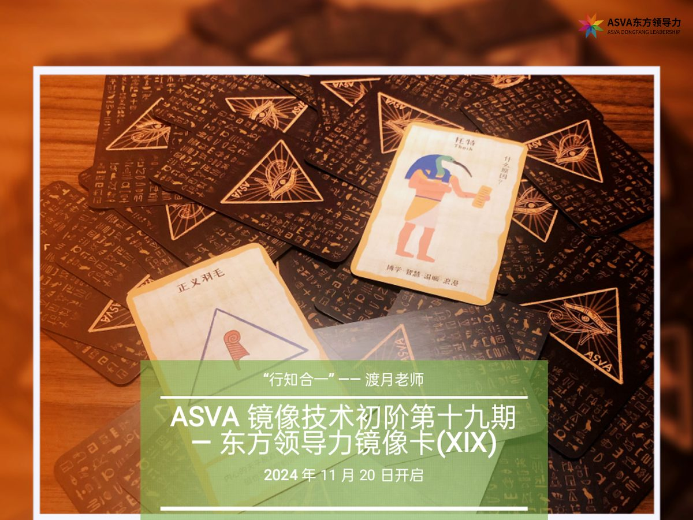

传承与传播
传统文化与东方美学：ASVA 自性花道、ASVA 初晴茶道（非遗相关传播）。
我们是谁

ASVA 是融合东方美学 · 传统文化 · 艺术 · 超个人心理学咨询 · 个人和组织发展的生态型教育机构。
2018 年成立至今，陪伴近两万名青年找回力量与清晰——在觉察中安定，在关系中成长，在美与自然中重新连接生命。
理念
我们致力于提供专业整合的超个人心理学咨询、中西合璧的领导力技术与培训，以及结合东方文化智慧的美育与人格成长支持体系。
传统文化与东方美学：ASVA 自性花道、ASVA 初晴茶道（非遗相关传播）。
支持个人事业与情感成长的教育养习体系，赋能管理者、团队与组织发展的东方领导力服务。
结合超个人心理学的咨询疗愈与疗愈师培训，涵盖自然疗愈与表达性艺术疗愈。
至人之用心若镜，不将不迎，应而不藏，故能胜物而不伤。
《庄子·应帝王》
以万物为师，行知合一
—— ASVA 创始人渡月老师
镜像技术基于超个人心理学，融合东方智慧与西方心理学精髓：像镜子一样中立、客观、真诚地回应——不分析、不指导、不干涉、不预设，只是如是映照。它不给你答案，而是在安全、宁静的对话中，逐渐觉察内在的波动与固着，找到属于自己的领悟和力量。
真正的成长不是被他人教育，而是被自己照亮。
在越来越焦虑的时代，内心的稳定比技巧更稀缺。
东方领导力不是更努力，而是更清晰地看见自己。
一花开五叶
ASVA 的核心服务与内容，如一花开五叶，彼此滋养、自成生态。

将道德经、心学、诸子百家、禅宗与道家养生，同教练技术、团体动力结合，形成适合东方场域的心法与实践。服务企业负责人、二代接班人、高管与创业团队。
2026 年升级《东方领导力教练式领导者（导师）》四个模块：开放型心智、黄金十二决策、心学教练、金种子价值提升。每个模块含线下工作坊、线上核心课与复盘，结束后十二个月陪跑。
东方心智八芒星：心气、心力、心境、心量等维度，突破固定化思维。
建立决策系统思维，避开拍脑门、拍胸脯、拍屁股走人。
致良知，行知合一。提问、聆听与觉察，用于自我修炼和带团队。
以价值创造为轴，把觉察落地为可传承的领导力与组织成长。
超个人心理学 · 非言语自然疗愈
茶道、花道、回春明点扣问、禅拍、水晶呼吸冥想、花神七式等，以自然为师，抚触心灵生活。
艺术疗愈技术与疗愈师培养
用色彩勾勒情绪，用线条释放压力——开启一场奇妙的心灵之旅，并培养专业艺术疗愈师。
家庭疗育 · 家庭教育与心理成长
许多关系的伤，从来不是不爱，而是不会表达和接纳。家庭疗育让情绪被理解，让爱重新生长。
导师 IP · 工作室 · 禅创空间
疗愈者有光，却没有舞台。空间孵化帮你把天赋落地，让光照亮更多人，也照亮自己。
传承亮点
花与茶，一静一动，皆是通往自性的门。
非遗传承 · 花道
2019 年于上海举办「首届中华花道艺术展」，500+ 媒体采访报道。完备教学系统含 MANDARAVA（花道技术）与 MANDALA（花道疗愈）：技术九阶四大风格，囊括东亚花道流派精髓；疗愈融合积极心理学、自然疗愈与表达性艺术治疗，以花读心，提升心智水平。

非遗传承 · 茶道
2019 年代表中国顶级茶道雅集参加北京世界园艺博览会，服务中外嘉宾与国家领导人。在唐宋茶道文化基础上，整理明清冲泡技法与径山寺茶宴、三炮台、三道茶等民族茶道，以禅修仪轨为基础，将中国茶道推向哲学化、美学化与深度化。

课程与服务

版权所有：集雅刚金（北京）文化传媒有限公司
国作登字-2021-L-00149407 · 国作登字-2022-F-10124812
曾与多家企业与机构同行，陪伴领导者与团队更清晰地看见自己。
吉利 · 上汽 · 招商银行 · 平安 · LVMH · 诺亚财富 · 中国银行 · 华侨城 · 亚朵 · 仲量联行 · 阿特拉斯·科普柯 · 波士登 等
空间
线上服务与线下城市空间配合，升级学员体验与陪伴深度。
联系
欢迎与我们连接。无论是个人成长、家庭疗育、企业领导力，还是空间孵化与合作，我们愿以温暖、专业的方式陪伴你。
探索和发现生命的意义
ASVA · 点亮美好生活
可通过线下各城市空间到访交流，或关注 ASVA 公益社群活动开启第一次相遇。